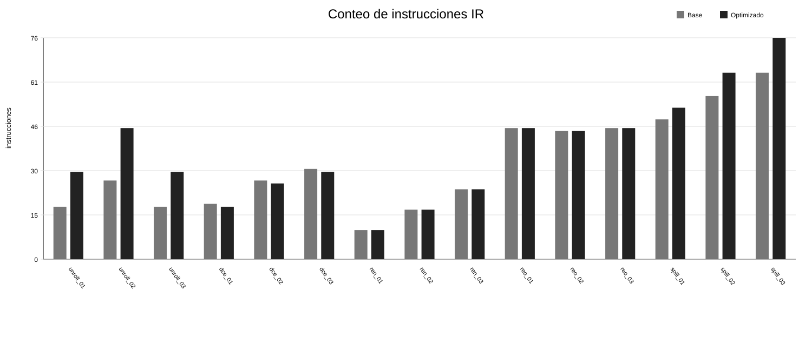
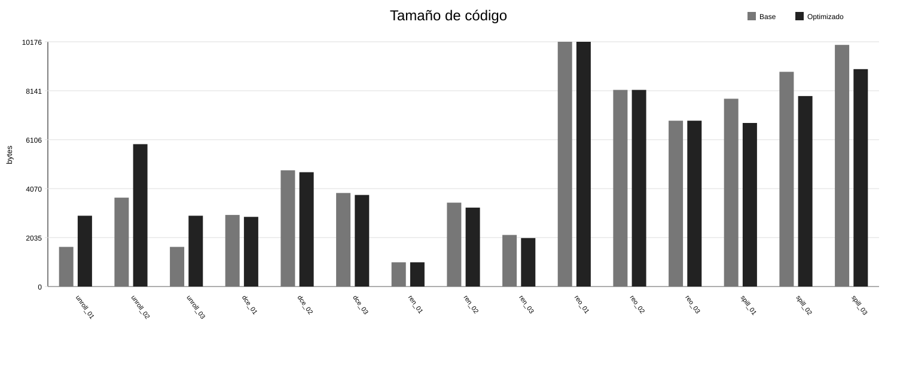
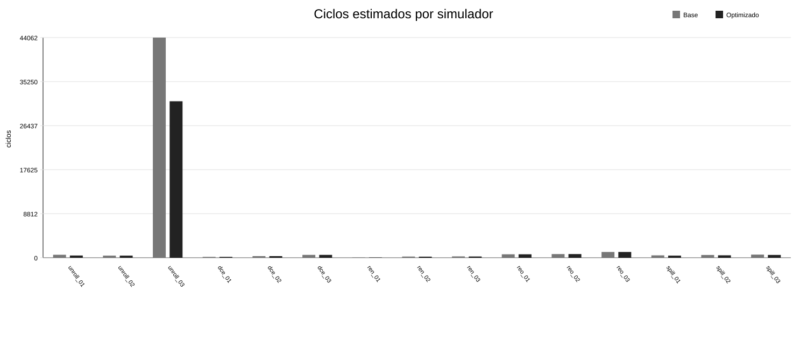
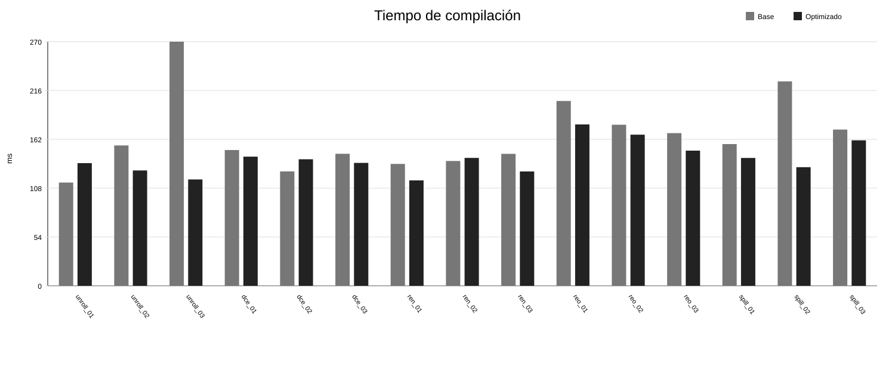
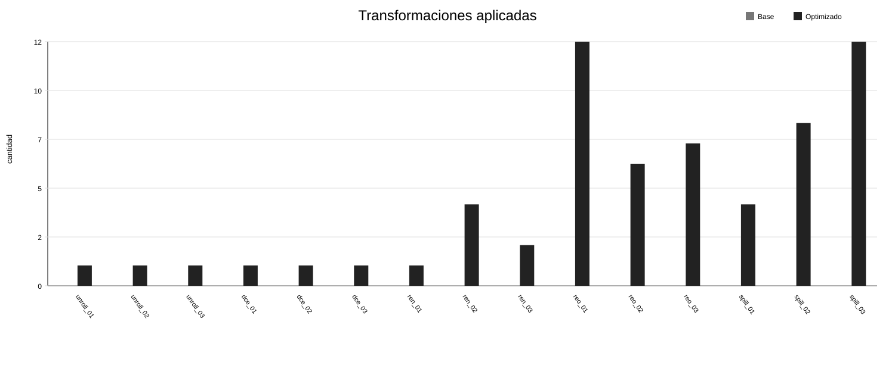

PASS: 15/15 programas preservan el resultado esperado y no presentan riesgos RAW en el simulador funcional.
La columna Base usa el mismo backend con Chaitin, excepto en Spilling: allí se usa la baseline diagnóstica --codegen-ir-mem para representar el esquema previo de temporales en memoria, ya que el programa intencionalmente excede los nueve registros físicos.
| prueba | categoria | resultado | ir_base | ir_opt | bytes_base | bytes_opt | ciclos_base | ciclos_opt | compilacion_base_ms | compilacion_opt_ms | transformaciones | raw_base | raw_opt |
|---|---|---|---|---|---|---|---|---|---|---|---|---|---|
| unroll_01 | Loop unrolling | 66 | 18 | 30 | 1648 | 2944 | 590 | 437 | 114.27 | 135.72 | 1 | 0 | 0 |
| unroll_02 | Loop unrolling | 10 | 27 | 45 | 3696 | 5920 | 423 | 415 | 155.30 | 127.66 | 1 | 0 | 0 |
| unroll_03 | Loop unrolling | 499500 | 18 | 30 | 1648 | 2944 | 44062 | 31312 | 270.16 | 117.70 | 1 | 0 | 0 |
| dce_01 | DCE | 5 | 19 | 18 | 2976 | 2896 | 171 | 171 | 150.25 | 142.91 | 1 | 0 | 0 |
| dce_02 | DCE | 11 | 27 | 26 | 4832 | 4752 | 325 | 325 | 126.60 | 140.02 | 1 | 0 | 0 |
| dce_03 | DCE | 3 | 31 | 30 | 3888 | 3808 | 569 | 569 | 146.10 | 136.01 | 1 | 0 | 0 |
| ren_01 | Renombramiento | 11 | 10 | 10 | 1008 | 1008 | 55 | 55 | 134.89 | 116.66 | 1 | 0 | 0 |
| ren_02 | Renombramiento | 32 | 17 | 17 | 3488 | 3280 | 232 | 219 | 138.14 | 141.51 | 4 | 0 | 0 |
| ren_03 | Renombramiento | 10 | 24 | 24 | 2144 | 2016 | 273 | 249 | 146.03 | 126.50 | 2 | 0 | 0 |
| reo_01 | Reordenamiento | 20 | 45 | 45 | 10176 | 10176 | 693 | 693 | 204.50 | 178.60 | 12 | 0 | 0 |
| reo_02 | Reordenamiento | 25 | 44 | 44 | 8176 | 8176 | 729 | 729 | 178.21 | 167.26 | 6 | 0 | 0 |
| reo_03 | Reordenamiento | 16 | 45 | 45 | 6896 | 6896 | 1154 | 1152 | 168.95 | 149.56 | 7 | 0 | 0 |
| spill_01 | Spilling | 55 | 48 | 52 | 7808 | 6800 | 478 | 415 | 156.85 | 141.48 | 4 | 0 | 0 |
| spill_02 | Spilling | 90 | 56 | 64 | 8928 | 7920 | 548 | 485 | 226.18 | 131.28 | 8 | 0 | 0 |
| spill_03 | Spilling | 133 | 64 | 76 | 10048 | 9040 | 618 | 555 | 172.90 | 160.99 | 12 | 0 | 0 |




